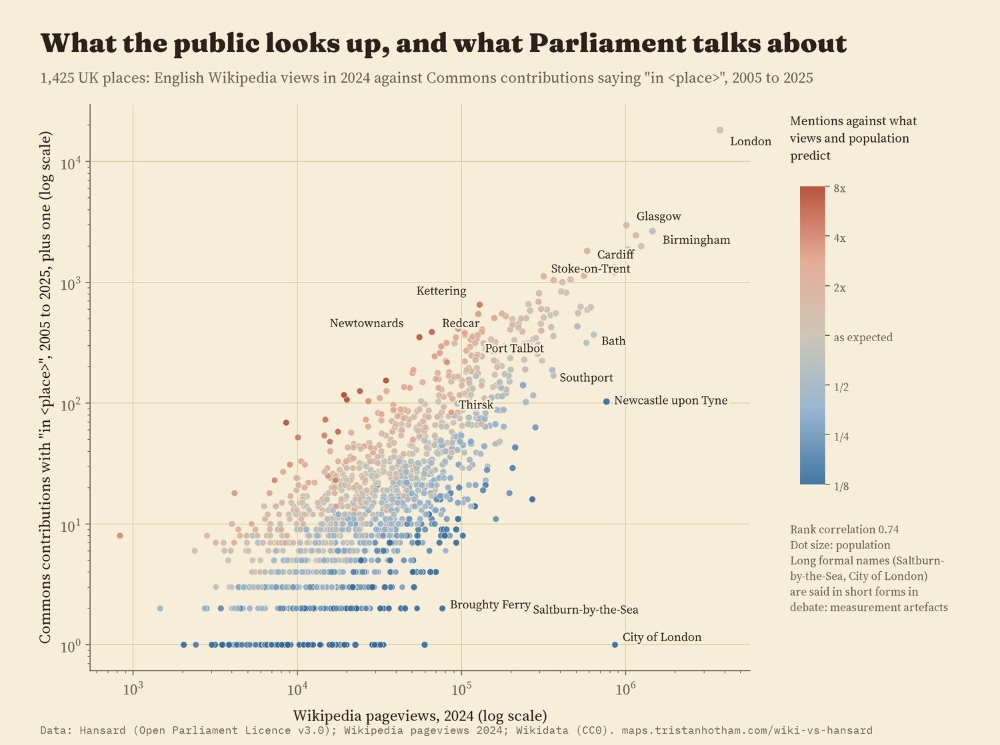
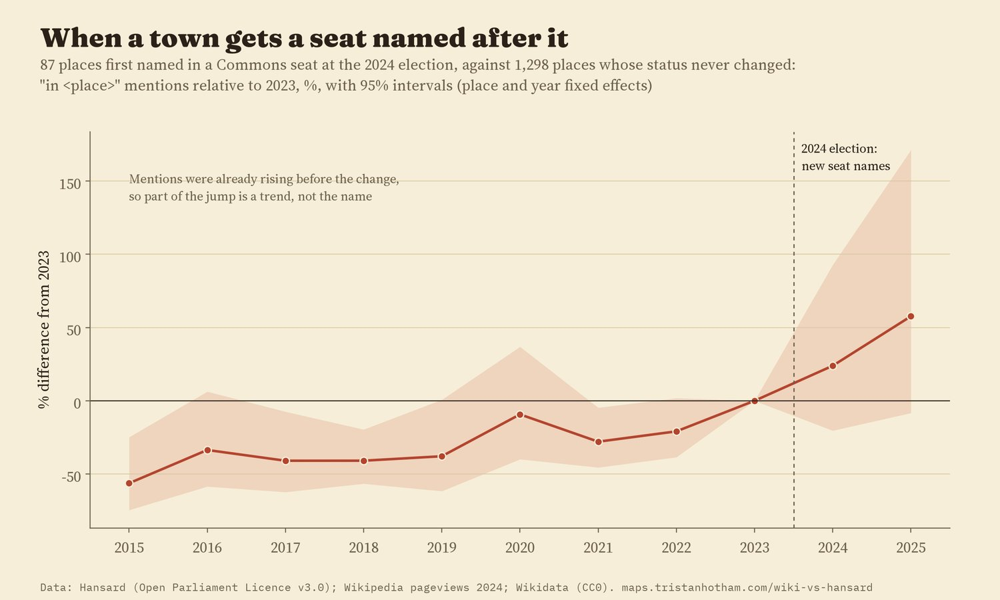
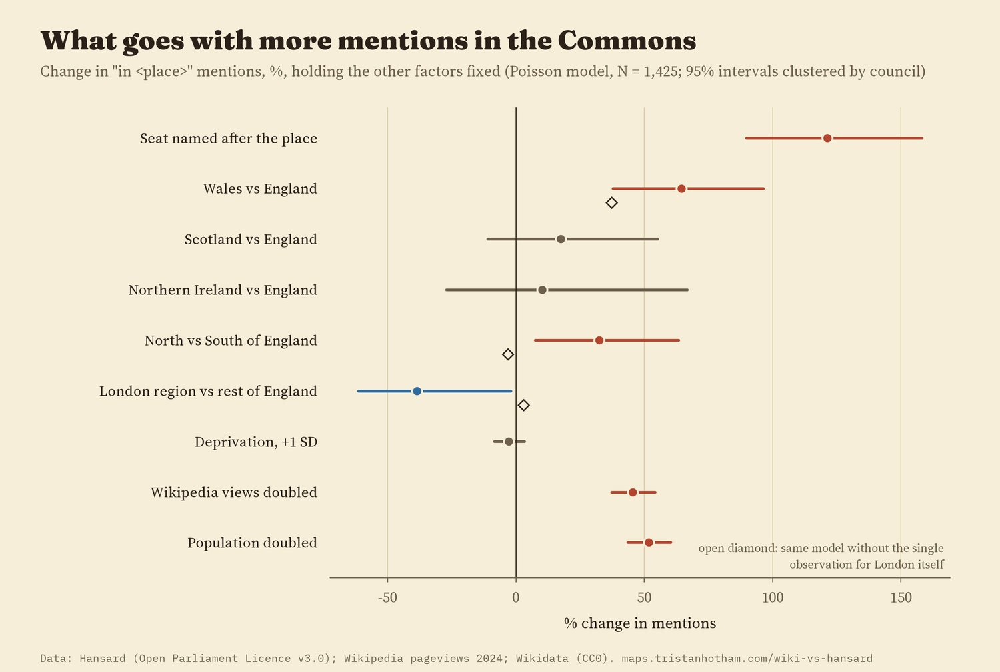
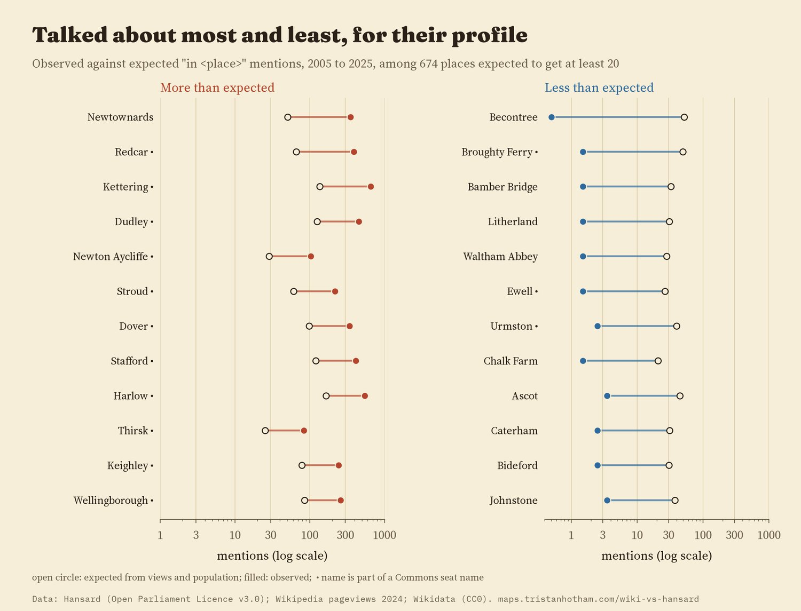
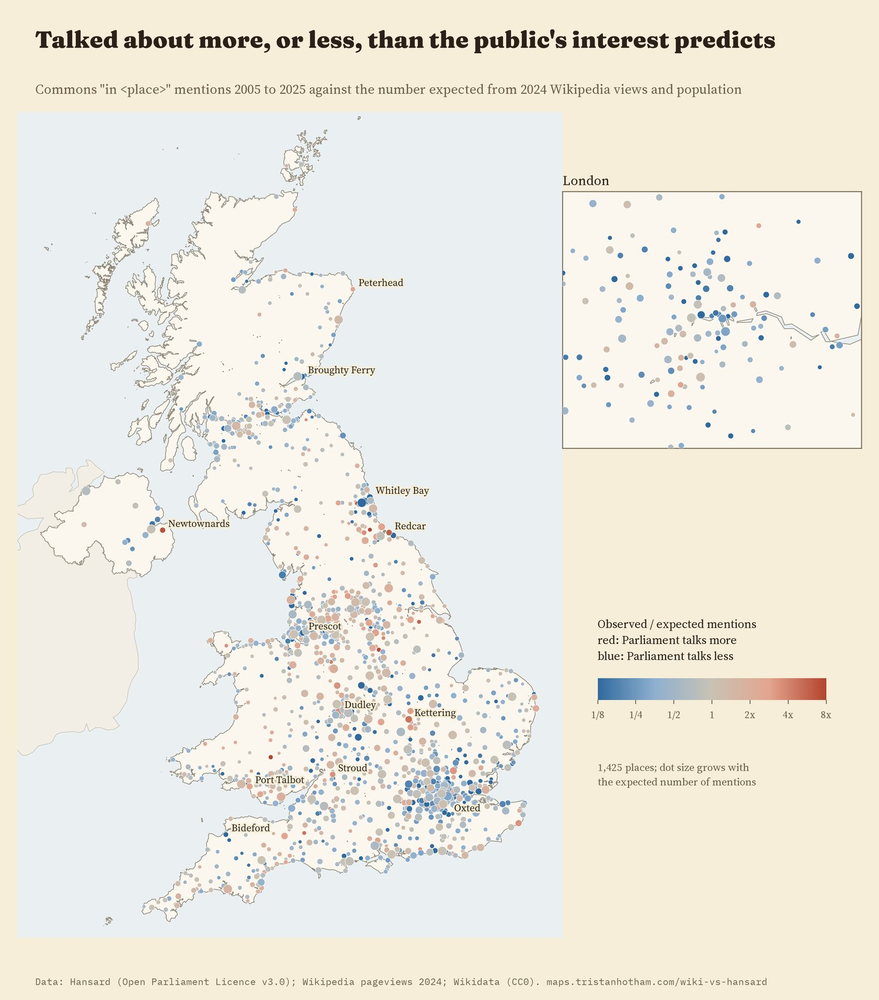
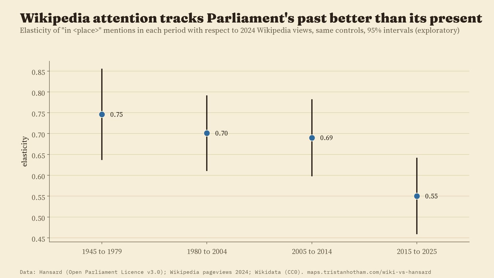

1,425 UK towns, cities and districts: how often MPs said "in" the place in the Commons from 2005 to 2025, against what its English Wikipedia views in 2024 and its population predict. Red: Parliament talks about it more; blue: less. Tap a dot.
Some places are famous with the public and hardly said in Parliament. Others come up in the Commons week after week while few people look them up. I matched 1,634 of the 1,661 town and city names counted in Hansard (98.4%) to their English Wikipedia articles and set two kinds of attention side by side: how many times people opened each article in 2024, and how many Commons speeches from 2005 to 2025 said "in" the place.
Big places get both kinds of attention. London alone takes 16.5% of all the Commons mentions here but only 4.2% of the Wikipedia views. Across all 1,425 places the two rankings line up with a rank correlation of 0.74. Holding population fixed, a place with twice the Wikipedia views gets about 45% more mentions (95% interval 37% to 54%). So public interest and parliamentary talk move together, but less than one for one.

Each dot is a place, coloured by mentions against what its views and population predict.
The strongest pattern is about names on the electoral map. Places whose name is part of a Commons seat's name, like Kettering, Redcar or Dudley, get 2.2 times the "in" mentions of places with the same views and population (95% interval 90% to 158% more). Shuffling seat names at random among similar places never comes close (1,000 tries). Part of this is how the counting works: a search for "in Bury" also finds "in Bury North", and "in Kettering" can mean the seat as well as the town. But places that only appear later in a seat's name, like Morley in Leeds South West and Morley, where neither of those can happen, still get 67% more mentions. Of the 25 places most over-mentioned for their profile, 84% have a seat named after them; of the 25 most under-mentioned, 32%.
Does the name cause the talk? Seat names change when boundaries are redrawn, so I followed places that gained one. For 87 places first named in a seat at the 2024 election, "in" mentions rose 24% in 2024 and 58% in 2025 against 2023. But their mentions were already rising in the years before, so part of that jump is a trend. Places that get a seat named after them were on the up anyway.

Places first named in a Commons seat in 2024, against places whose status never changed.
With the same views and population, places in Wales get 64% more Commons mentions than places in England (95% interval 38% to 96%), and this holds in every check I ran. Scotland and Northern Ireland are not clearly different from England. The main model also says northern English places get more mentions than southern ones, and London's districts fewer, but both of those depend on a single place, London itself: leave it out and the gaps vanish. Deprivation makes no clear difference.

Changes in mentions with 95% intervals from the main model.
Among the 674 places big enough to expect at least 20 mentions, Newtownards in County Down was said 6.9 times as often as its views and population predict, then Redcar (5.8), Kettering (4.8) and Dudley (3.6). At the other end are suburbs and towns folded into seats named after somewhere else: Bamber Bridge, Litherland, Waltham Abbey, Ewell. Some gaps are about the public, not Parliament: Southport had 357,120 views in 2024, a year of terrible news there, and Saltburn-by-the-Sea had 245,592, after a hit film took its name.

Observed and expected mentions for the places furthest from expectation.

The map above, as a still.
The link between the two kinds of attention weakened. Wikipedia views in 2024 predict mentions from 2005 to 2014 more strongly than mentions from 2015 to 2025 (elasticity 0.63 against 0.49), and, oddly, they line up best with the debates of 1945 to 1979 (0.75, against 0.55 for 2015 to 2025 in the same simpler model). What the public looks up today looks more like Parliament's old map of Britain than its current one. Which places are over- or under-mentioned also shifted between the two decades: the rank correlation of the two lists is only 0.47.

How strongly 2024 Wikipedia views predict Commons mentions in each period.
Parliament. The counts come from my earlier study Mentioned in the House: Commons contributions containing "in" plus the place's name, year by year, from the Hansard search. The "in" phrase leaves out "the hon. Member for", surnames and lists of votes. Names that are ordinary words were checked by sample and scaled; names shared by two places or with a better-known namesake are left out.
The public. English Wikipedia views by people (not bots) in 2024 for each place's article, from Wikimedia's pageview counts. Each Hansard name was matched to a Wikidata settlement with the same name within 20 km, with 16 spellings fixed by hand. I left out 20 places where another town of the same name is about as well known (Farnborough, Ripley, Beeston), places whose article seems to have been renamed during the year, and places outside the UK, such as Gibraltar, that Wikidata lists among UK settlements.
The models. I wrote the plan down before looking at the results. The main model is a Poisson regression of mentions on views, population, the seat name, distance from London, a 2011 Census deprivation measure and the region, with uncertainty clustered by council. I then reran it 20 ways: other outcomes and years, dropping the biggest places, other population sources, stricter or looser name matching, and one region left out at a time.
What this cannot say. It is a comparison, not an experiment. Wikipedia views follow tourism, television, news and naming quirks, and one year of views is set against twenty-one years of debate. The Hansard phrase depends on the exact name: people say "Saltburn", "Burton" and "the City", so long formal names undercount, and I keep those out of the rankings. Wikipedia readers are not only in the UK.